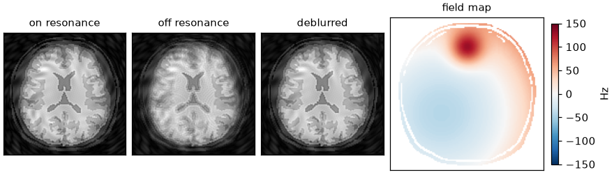

Note
Go to the end to download the full example code.
Off-resonance blurring in spirals#
The blurring that off-resonance produces in a spiral image, simulated for a
known field map and removed with bartorch.tools.deblur().
A spin precessing at an offset \(f\) from the reference frequency accumulates the phase \(2\pi f t\) during the readout. A spiral acquires each k-space radius at its own time \(t(k)\), so the phase is a function of \(|k|\), and a voxel off resonance is convolved with a kernel whose width grows with \(f\) and with the readout duration. Conjugate-phase reconstruction removes the phase at each voxel’s own frequency [1]; the correction here applies it as a sum of a few image-domain convolutions whose per-voxel weights depend on the field map, in the manner of multifrequency interpolation [2].
import math
import numpy as np
import torch
import bartorch
import bartorch.tools as bt
SIZE = 128
Object and field#
BART’s brain phantom in a field map made of a smooth second-order variation and a localized offset near the frontal pole, of the kind an air-tissue interface produces, in Hz.
image = bt.phantom(SIZE, geometry="brain").abs()
image = (image / image.max()).to(torch.complex64)
inside = image.abs() > 0
y, x = torch.meshgrid(torch.linspace(-1, 1, SIZE), torch.linspace(-1, 1, SIZE), indexing="ij")
field = 40 * x - 30 * y + 60 * (x**2 + y**2) + 120 * torch.exp(-((y + 0.6) ** 2 + x**2) / 0.05)
field = field - field[inside].mean()
low, high = float(field[inside].min()), float(field[inside].max())
print(f"field over the object: {low:+.0f} to {high:+.0f} Hz")
field over the object: -42 to +129 Hz
The spiral#
Sixteen interleaves of a variable-density spiral, each a readout of 20 ms
whose radius grows as \(t^{0.6}\) to the edge of the 128 grid, in grid
units. The density compensation is bartorch.estimate_density().
INTERLEAVES, SAMPLES, READOUT_S = 16, 2000, 20e-3
progress = np.linspace(0.0, 1.0, SAMPLES)
radius = progress**0.6 * SIZE / 2
angle = 2 * np.pi * SIZE / (2 * INTERLEAVES) * progress
arms = np.stack(
[
np.stack(
[
radius * np.cos(angle + 2 * np.pi * arm / INTERLEAVES),
radius * np.sin(angle + 2 * np.pi * arm / INTERLEAVES),
np.zeros(SAMPLES),
],
axis=-1,
)
for arm in range(INTERLEAVES)
]
)
trajectory = torch.tensor(arms, dtype=torch.float32)
density = bartorch.estimate_density(trajectory[..., :2].reshape(-1, 2), (SIZE, SIZE))
density = density.reshape(INTERLEAVES, SAMPLES, 1)
The acquisition is simulated exactly for a field quantized to 128 levels:
each level’s part of the object is transformed with bartorch.nufft()
and given the phase its frequency accumulates at each sample time.
sample_time = torch.tensor(progress * READOUT_S, dtype=torch.float32)
levels = torch.linspace(float(field.min()), float(field.max()), 128)
field = levels[(field[..., None] - levels).abs().argmin(-1)]
def acquire(field):
samples = torch.zeros(INTERLEAVES, SAMPLES, 1, dtype=torch.complex64)
for frequency in torch.unique(field):
part = image * (field == frequency)
accrued = torch.polar(torch.ones(SAMPLES), 2 * math.pi * float(frequency) * sample_time)
samples += bartorch.nufft(part, trajectory) * accrued[:, None]
return samples
def grid(samples):
return bartorch.nufft_adjoint(samples * density, trajectory, image_shape=(SIZE, SIZE))
on_resonance = grid(bartorch.nufft(image, trajectory))
blurred = grid(acquire(field))
The transfer#
ReadoutTiming tabulates the readout time as
a function of \(|k|^2\) from one arm; the interleaves are rotations of
it, so it serves all of them. fit_transfer()
approximates \(e^{-2\pi i f t(k)}\) over a band of frequencies by a sum
of terms, each a separable function of k-space times a weight that depends
on \(f\) alone. More terms reduce the error of the approximation and
cost one convolution each.
timing = bt.ReadoutTiming.from_trajectory(arms[0][:, :2], duration=READOUT_S)
band = float(field.abs().max()) + 5.0
def error(estimate):
return float((estimate - on_resonance).norm() / on_resonance.norm())
print(f"blurred NRMSE {error(blurred):.3f}")
for terms in (4, 8, 16):
transfer = bt.fit_transfer(timing, band=band, terms=terms)
deblurred = bt.deblur(blurred, field, transfer)
print(
f"{terms:2d} terms NRMSE {error(deblurred):.3f} fit error "
f"{transfer.error(timing):.1e} amplification {transfer.amplification:.0f}"
)
blurred NRMSE 0.151
4 terms NRMSE 0.711 fit error 9.6e-01 amplification 1
8 terms NRMSE 0.297 fit error 2.2e-01 amplification 22
16 terms NRMSE 0.083 fit error 3.5e-04 amplification 30
The error is measured against the gridding reconstruction of the same trajectory on resonance. Once the fit error is small, adding terms no longer changes the result, and the residual is the error of the conjugate-phase approximation itself, which treats the field as constant over the extent of each voxel’s blurring kernel. A uniform field satisfies that assumption:
uniform = torch.full_like(field, 50.0)
transfer = bt.fit_transfer(timing, band=band, terms=16)
flat = grid(acquire(uniform))
deblurred_flat = bt.deblur(flat, uniform, transfer)
print(f"uniform 50 Hz: blurred {error(flat):.3f}, deblurred {error(deblurred_flat):.3f}")
uniform 50 Hz: blurred 0.186, deblurred 0.021

The remaining error for the uniform field is the difference between the deblurred gridding reconstruction and the on-resonance one, which the approximation does not introduce. Where the field varies within the kernel, as at the localized offset, the conjugate-phase residual adds to it. An iterative reconstruction that includes the field in the encoding operator removes that residual at the cost of one transform per time segment.
References#
Total running time of the script: (0 minutes 5.768 seconds)